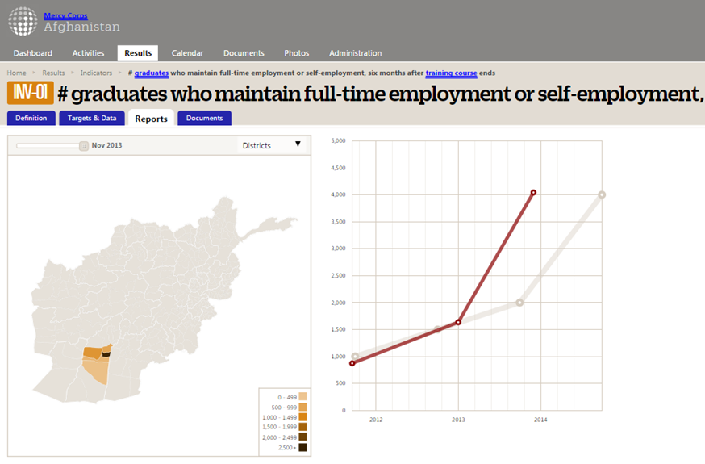
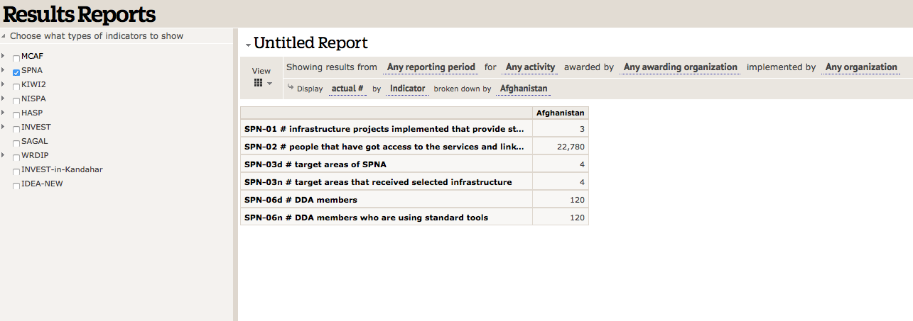
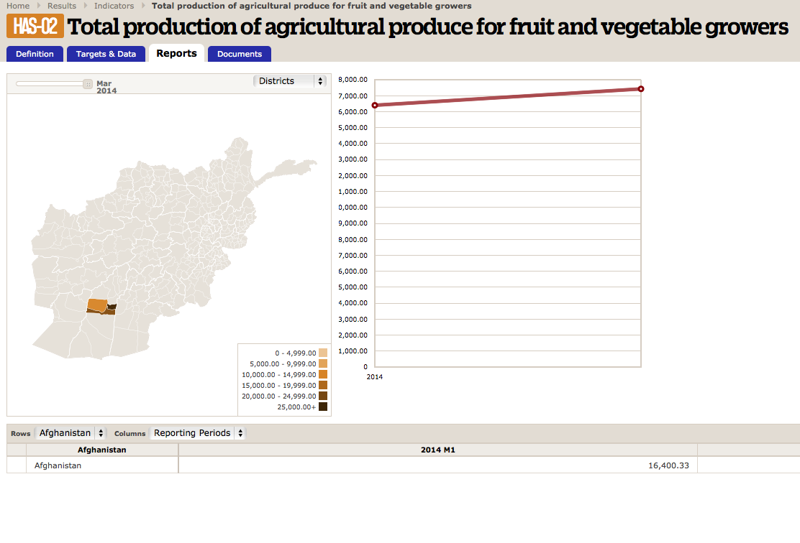
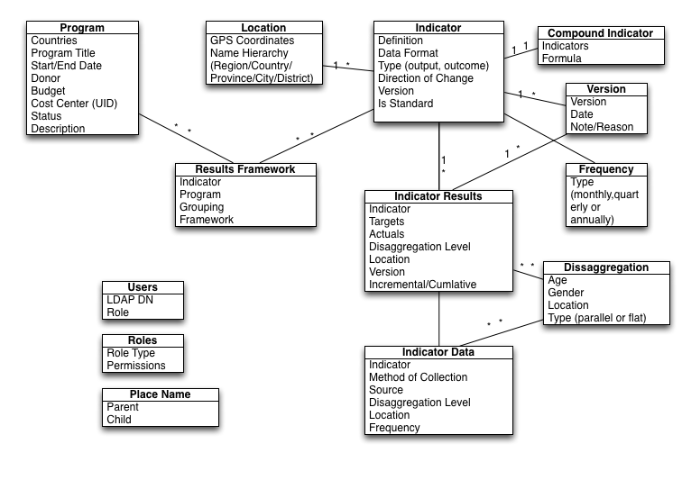

AMS Data Diagram - MVP
"ESC" to see high level overview, right arrow to move to next section, Down arrow to see subsections.

Core Level Requirements
Should support Country level program staff with individualized data entry and reporting views of their specific data, while simultaneous collecting that data for regional and global views.
- Standard Indicators embedded and selectable during indicator creation.
- Ability to view all existing indicators and select from them, whether standard or custom-defined by others.
- Track and report on Targets vs. Actuals
- Have some capacity to contiue work in offline situations (Import/export of Data)
- Track beneficaries served.
- Focus on Mapping visualizations for country programs.
- Some amount of customizeable reporting with easy export options to thrid party or in-house tools.
Programs
Import data from GAIT (Grant Mangement System) system through exposed API
- Unique identifier code (e.g. cost center)
- Status: pending(???), funded, closed
- Open text description fields: context, program description, program objectives
Indicators
Both standard and custom indicators can be created into the system. The use of an Indicator in a Program should create a unique instance of the inidcator. There should be functionality to search all indicators, and report out and aggregate any commonly used instances.
- data format (number, percent, text, yes/no)
- type (output, outcome, result, etc) (Related Field)
- direction of change (increase or decrease)
- location [Complex]
- Should be able to derive administrative boundaries and names (city, village, governate etc.) from location.
- Location Heirarchy Country/Province/District(Admin unit) and/or Place Name and/or Coordinates
Indicator Disaggregation:
- Default disaggregate levels such as “age”,“gender” and "location"
- User-defined disaggregations (2.0)
- Support for both cross (nested) disaggregation as well as parallel (flat) disaggregation.
Indicator Location:
Should allow for manual entry of place names based on pre-defined lists (Country List, Province List, Administrative Subdistict list etc.).
- Should allow for changes in the admin districts
- Should allow for GPS points (lat,long) and lookup and auto-fill of place names through third party service
Indicator Classification and Categorization
- Associate multiple sectors with an indicator
- Associate with Country Objectives
- User-define tags for indicator - Global Standard Indicator and Alpha or not
Indicator Data Acquisition:(Text Fields)
Primary methods should be manual entry and excel file upload. Should also include at some point (2.0?) the ability to import from JSON or XML feeds via API.
- Method: how data is to be collected
- Source: Where would the data come from
- Frequency: How frequently to collect data
Authentication and Authorization
If done in Python/Django we can provide a starting framework that includes integartion of our internal SSO system with the Django built in User and auth.
- LDAP
- CoSIGN
- Frequency: How frequently to collect data
Results Framework
Indicators are linked to one (or many) levels of the hierarchy, and possibly to more than one results framework. Possible levels of framework include:
- Program specifc Framework with indicators grouped by sector
- Country specific Framework with indicators grouped by country objectives (goals)
- Region or Organization specifc frameworks grouped by sector, region, country etc.
- Sector-Specific Results Framework
- Agency-Level Results Framework
Reports
Set of analytic tools that should allow for filtering and searching (by indicator, program, country or region, donor, sector, or some other identifiable tag or bookmark). Displays should include table format (with options for rows and columns to display, such as a choice of reporting periods), and a basic map. Other line or bar graphs will come in version 2.0.
- List of indicators and their current Target vs Actual status
- List of standard indicators and their aggregated results, with the ability to see each of their 'instances' (by program and country)
- Individual indicators displayed in a line graph (plotting targets against actuals)
Indicator Report
Basic country map and results report
Filtered Report
Sample filter report for one Program
Indicator Report
Basic country map and results report

AMS Data Diagram - 2.0
"ESC" to see high level overview, right arrow to move to next section, Down arrow to see subsections.
AMS 2.0
- Add indicator to sector library
- Select indicator from library and use for program
- Visualizations
- Portfolio dashboard
- Aggregation
- Integrations and API
- Additional Search and Report Options
Indicator to sector library platform
The TSU team has a google site with information on Standard and Alpha indicators. It's likely we will need to connect or integrate with that system.
- View standard indicator meta data from the TSU library and use it for a program.
Visualizations
Create more visualizations for reports. Heat Map report based on actuals data over time. Targets vs Actuals graph for indicators.
Portfolio dashboard
Users can select program and/or indicators as part of a custom portfolio or access a default portfolio (country, region) Program, Country, Region and Global Indicator dashboards with rollups and aggregations for standard indicators.
- Bookmarking - Create a per-user portfolio of tracked programs.
Aggregation
Results of standard indicators are aggregated across programs, countries, regions with the ability to drill down to see each unique instance of the standard indicator, including program and country.
Integrations and API
Additional Search and Report Options
- Report Generation TSU report - Ability to generate preformatted simple reports, and to export data into excel for additional reports. (Include TVA report by Sector across countires / regions)
- Search Functions - Ability to search across programs globally for all uses of indicators, ability to search by tags;